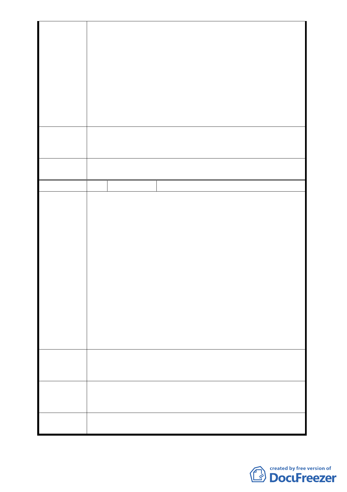

舍，請市府邀集都委會委員、土地管理單位、使用
單位及文化局辦理現場會勘後再討論更新單元範
圍之劃定。」，市府更新處鄰地協調問題尚未解決，
以報告案「為『劃定臺北市大安區龍泉段一小段
421-1地號等8筆土地為更新單元』案，依本會第595
次會議決議之辦理情形，報請 公鑒。」提會報告。
2. 案經98年10月13日本會第601次委員會議決議：
「一、洽悉。二、請都市更新處將原提案依程序提
委員會議審議。」，本案將俟市府更新處提會審議
時再議。
99.12.3 專
案 小 組 結 同編號1
論
委
員
會決
議
同編號
1
編 號 4 陳情人 涂智堂等共 38 人
1. 在 98.10.13 都委會地 601 次會議中周邊居民沒有表
達意見機會。懇請都委會能於下次會議中重新檢討
此案，並讓周邊居民能充分表達意見。
2. 南北兩側居民分別正式行文至更新處申請劃定（案
號 98.8.14 涂字第 001 號和 98.8.26 昌字第 001 號）。
98.9.28 更新處以本案仍在程序中，先行檢還申請書
件。因兩側居民申請劃定區域更大更完整，參與人
陳情理由
數更多，為保障居民權益，只好在檢送至更新處（案
號：98.10.16 涂字第 002 號和 98.10.16 昌字第 002
號）
3. 本案之申請受託人達欣開發股份有限公司，鑽營都
更法令漏洞，引導公有地周邊居民降低參與共同都
更案。再以極優厚條件說服本塊公有地角落 7 位所
有權人申請本案，建商得以極少私有地（少於 5
％），綁住大片公有地，從中獲取暴利。
懇請都委會諸位先進賢達，秉持良知良能，造福
建 議 辦 法 溫州社區居民，本案應予以退回，並通過南北兩側居
民後提之劃定更新單元案。
99.12.3 專
案 小 組 結 同編號1
論
委
員
會決
議
同編號
1
- 24 -